Bem-vindo!
As bibliotecas da UFG são pontos de apoio para produzir e consolidar o conhecimento. Todo o esforço das equipes que atuam nas bibliotecas é orientado neste sentido.
Além da gama de materiais disponíveis, as bibliotecas oferecem espaços e serviços orientados para atender democraticamente ao ensino, à pesquisa e à extensão.
Este treinamento foi construído como primeiro canal de comunicação entre você, usuário, e as bibliotecas.
Seja bem-vindo!
Sistema de Bibliotecas da UFG (Sibi/UFG)
O Sistema de Bibliotecas da UFG (Sibi/UFG)
O Sibi/UFG é composto por 10 bibliotecas, distribuídas pelo estado de Goiás.
As bibliotecas da UFG são do tipo universitária, com exceção da Biblioteca CEPAE, que é escolar.
O usuário regular pode utilizar quaisquer bibliotecas do Sibi/UFG para estudar, consultar material, fazer cópias (dentro do limite legal) e pegar material emprestado.
Goiânia
5 bibliotecas
Aparecida de Goiânia
1 biblioteca
Jataí
2 bibliotecas
Catalão
1 biblioteca
Goiás
1 biblioteca
bibliotecas em Goiânia
uma biblioteca em Aparecida de Goiânia
duas bibliotecas em Jataí
uma biblioteca em Catalão
uma biblioteca em Goiás
Goiânia
Central (BC) - Campus Samambaia
- Endereço
- Rua Aroeira, sem número, Campus Samambaia, CEP 74690-900
- Telefones
- (62) 3521-1151 - Administrativo
(62) 3521-1230 - Atendimento ao usuário - Horário de funcionamento
- De segunda a sexta, das 7h15 às 22h
Seccional Campus Colemar Natal e Silva (BSCAN)
- Endereço
- Quinta Avenida, quadra 42, sem número, Setor Universitário, CEP 74605-040
- Telefones
- (62) 3209-6505
(62) 3209-6013 - Horário de funcionamento
- De segunda a sexta, das 7h15 às 22h
Seccional CEPAE (BSCEPAE)
- Endereço
- Alameda Flamboyant, sem número, Campus Samambaia, 74690-900
- Telefone
- (62) 3521-1294
- Horário de funcionamento
- De segunda a sexta, das 7h às 17h30
Seccional Letras e Linguística (BSLL)
- Endereço
- Alameda Palmeiras, sem número, Campus Samambaia, CEP 74690-900
- Telefone
- (62) 3521-1411
- Horário de funcionamento
- De segunda a sexta, das 9h às 21h
Seccional Museu Antropológico (BSMA)
- Endereço
- Avenida Universitária, nº 1.166, Setor Universitário, CEP 74605-010
- Telefone
- (62) 3209-6374
- Horário de funcionamento
- De segunda a sexta, das 7h às 13h
Aparecida
Seccional Campus Aparecida (BSCAP)
- Endereço
- Rua Mucuri, sem número, área 3, Bairro Conde dos Arcos, CEP 74969-017
- Telefone
- (62) 3209-6558
- Horário de funcionamento
- De segunda a sexta, das 7 às 19 horas
Catalão
Seccional Regional Catalão (BSRC)
- Endereço
- Avenida Lamartine P. de Avelar, sem número, CEP 75704-020
- Telefones
- (64) 3441-5360
(64) 3441-5306 - Horário de funcionamento
- De segunda a sexta, das 7h às 22h
Sábado, das 8h às 12h (somente em período letivo)
Goiás
Seccional Regional Goiás (BSRGO)
- Endereço
- Avenida Doutor Deusdete F. de Moura, quadra 5, lote 4, Leste Centro, CEP 76600-000
- Telefone
- (62) 3371-2741
- Horário de funcionamento
- De segunda a sexta, das 7h30 às 22h
Sábado, das 8h às 12h (somente em período letivo)
Jataí
Seccional Regional Jataí – Jatobá (BSREJ Jatobá)
- Endereço
- Rodovia BR-364, km 192, Setor Parque Industrial, 3.800, CEP 75800-000
- Telefone
- (64) 3606-8261
- Horário de funcionamento
- De segunda a sexta, das 7h às 22h
Sábado, das 8h às 12h (somente em período letivo)
Seccional Regional Jataí – Riachuelo (BSREJ Riachuelo)
- Endereço
- Rua Riachuelo, sem número, CEP 75800-000
- Telefone
- (64) 3606-8137
- Horário de funcionamento
- De segunda a sexta, das 7h às 22h
Sábado, das 8h às 12h (somente em período letivo)
Serviços oferecidos pelo Sibi/UFG
O Sibi/UFG oferece diversos produtos e serviços. Conheça alguns deles.
-
Empréstimo de materiais
Prazos e quantidades variam de acordo com o tipo de usuário.
-

Wi-fi
Internet sem fio (Eduroam). Para acesso use o login e a senha do Portal UFGNet.
-
Alerta de devolução por e-mail
Cortesia oferecida pelo Sibi/UFG para lembrar a data de devolução.
-
Computadores para pesquisa e elaboração de trabalhos acadêmicos
Disponíveis nos Centros de Informática e Apoio Didático (CIAD) de cada biblioteca.
-
Orientação sobre as normas de apresentação de trabalhos acadêmicos
Com base nas normas ABNT, que podem ser consultadas on line nas bibliotecas.
-
Renovação e reserva on line de material informacional
Realizados através do site do Sibi/UFG, com senha e login próprios.
Veja mais nos menus Produtos/ Serviços, no site do Sibi/UFG (www.bc.ufg.br).
Acervo
Os acervos das bibliotecas são compostos por materiais informacionais diversos, entre eles:
Acervo Físico
-
Livros
-
Jornais
-
Revistas
-
CD's / DVD's
-
Mapas
-
Partituras
-
LP's
-
Dissertações e Teses
Acervo Digital
-
Base de dados
-
Biblioteca Digital de Teses e Dissertações (BDTD)
-
Livros eletrônicos (e-books)
-

Portal Capes
-
Periódicos da UFG
-

Normas ABNT
-

Repositório institucional
O acervo das bibliotecas é constituído para atender aos cursos oferecidos em cada câmpus da UFG.
Você pode contribuir na escolha dos materiais a serem comprados fazendo sugestões ao representante da sua faculdade no Conselho do Sistema de Bibliotecas.
Veja no site da biblioteca (www.bc.ufg.br, link Conselho de Bibliotecas - menu inferior) quem é o representante da sua faculdade.
Serviços on line
Através do site da biblioteca (www.bc.ufg.br) é possível consultar o catálogo on line dos acervos que a biblioteca possui, bem como verificar se o material está disponível ou emprestado. Siga o tutorial de busca no acervo.
Os acervos impressos podem ser consultados no link Acervos nas bibliotecas. Os digitais, no link Acervos virtuais.
- Para utilizar os serviços on line é necessário finalizar o cadastro na biblioteca e solicitar uma senha específica;
- A solicitação da senha deve ser feita pelo Portal UFGNet/SIGAA, na aba Acadêmico;
- Após a solicitação, a senha será enviada automaticamente para o e-mail cadastrado no portal UFGNet/SIGAA. Portanto, é importante manter o endereço de e-mail atualizado;
- A utilização dos serviços on line é de responsabilidade do usuário que aderir aos mesmos. Antes de começar a usar os serviços, leia a Instrução Normativa que é enviada juntamente com a senha.
Veja dicas de como melhor utilizar os serviços no link Serviços/Serviços on line, no site da biblioteca (menu superior).
Prazos e quantidade de itens emprestados
| Tipo de material | Quantidade por vez | Número máximo de dias |
|---|---|---|
| Folhetos | 10 10 10 10 10 10 | 7 dias 7 dias 14 dias 14 dias 14 dias 30 dias |
| Livros | 5 5 10 10 10 10 | 7 dias 30 dias 30 dias 14 dias 14 dias 30 dias |
| Multimeios | 3 3 3 3 3 3 | 2 dias 2 dias 2 dias 2 dias 2 dias 2 dias |
| Periódicos | 10 10 10 10 | 30 dias 14 dias 14 dias 14 dias |
| Teses e Dissertações | 1 1 3 3 3 3 | 7 dias 30 dias 30 dias 14 dias 14 dias 30 dias |
| Chave do Escaninho | 1 1 1 1 1 1 | 1 dia 1 dia 1 dia 1 dia 1 dia 1 dia |
Normas básicas da Biblioteca
Assista ao vídeo abaixo para entender algumas das normas básicas para usufruto das bibliotecas do Sibi/UFG.
Normas de utilização
- A cada usuário é facultado o empréstimo domiciliar de 1 (um) exemplar de cada título; exceto quando a obra for editada em volumes (exemplo: Volume 1 e Volume 2).
- A devolução dos materiais pode ser feita por qualquer pessoa. Deve ser na biblioteca onde foi realizado o empréstimo e não é preciso apresentar a carteira de usuário.
- A não devolução do material na data prevista acarreta multa por item e por dia de atraso, independente da categoria do usuário.
- Para os livros da Coleção de Reserva, a multa por atraso é por hora e por item emprestado. Os livros desta coleção saem às 15h da sexta-feira (ou do dia anterior, no caso de feriado) e devem ser devolvidos até as 10h do primeiro dia útil seguinte ao empréstimo.
- A renovação de materiais pode ser pela internet ou pessoalmente, na biblioteca. Neste caso, é necessário estar com a carteira de usuário da biblioteca e o material em mãos.
- O usuário é responsável por perdas e danos causados a qualquer material retirado por empréstimo ou consulta, sendo obrigatória a substituição pela mesma edição ou por uma edição mais atualizada.
- O usuário em débito com a biblioteca fica impossibilitado de:
- Fazer empréstimos, renovar e reservar materiais;
- Receber a “Declaração de Nada Consta”.
- Para dar baixa no débito é necessário entregar, em qualquer uma das bibliotecas, o comprovante de pagamento da GRU identificado com o nome e a matrícula do usuário em débito.
- Não há cobranças de multas relativas aos dias em que a biblioteca estiver fechada ao público. O material deve ser devolvido no primeiro dia útil seguinte.
- Nos casos de fechamento da biblioteca por períodos longos, os usuários têm 10 (dez) dias úteis – independentemente do recesso acadêmico – para regularizar sua situação, sem cobrança de multas.
- A retirada de qualquer material informacional é suspensa sempre que ocorrer falta de energia elétrica, queda da internet ou erro no acesso ao cadastro de pessoas da UFG.
Informações importantes
- Para empréstimo de material e uso do CIAD é necessário ter a carteira da biblioteca da UFG. Ela é pessoal e intransferível.
- A multa é uma sanção disciplinar. Não é taxa.
- O valor da multa por atraso na devolução dos materiais é de R$ 1,50 por dia e por item (desde 1999).
- A multa e os demais débitos com a biblioteca devem ser pagos no Banco do Brasil via Guia de Recolhimento da União (GRU), que é gerada no site da biblioteca (www.bc.ufg.br).
- A ausência do recebimento do alerta de devolução não é argumento para a exclusão de eventuais multas. O alerta de devolução é uma cortesia da biblioteca.
- O Sibi/UFG recomenda que os usuários fiquem atentos às normas de uso do guarda-volumes estabelecidas em cada biblioteca.
É hora de...
Testar a sua memória!
Responda às 4 perguntas abaixo! Em cada pergunta, marque uma ou mais alternativas corretas.
Mandou bem!
Se você quiser, pode tentar responder novamente, com novas perguntas!
Agora você sabe tudo sobre o Sibi/UFG! Siga em frente para saber como obter seu cadastro.
Cadastro na biblioteca
Para fazer a carteira da biblioteca apresente, no balcão de empréstimos:
- Documento de identificação pessoal
- Uma foto 3x4
Leia atentamente o Guia do Usuário do Sibi/UFG, ele contém todas as informações sobre a biblioteca de que você vai precisar. Disponível no site para baixar e impresso nas bibliotecas.

Foto 3x4
Documento de identificação pessoal
Observações sobre o cadastro na biblioteca
- É atualizado automaticamente quando ocorre a renovação da matrícula, pois o Sibi usa o banco de dados da UFG.
- É pessoal e intransferível.
- Em caso de perda da carteira, comunique o fato no balcão de empréstimo da biblioteca mais próxima e solicite a 2ª via.